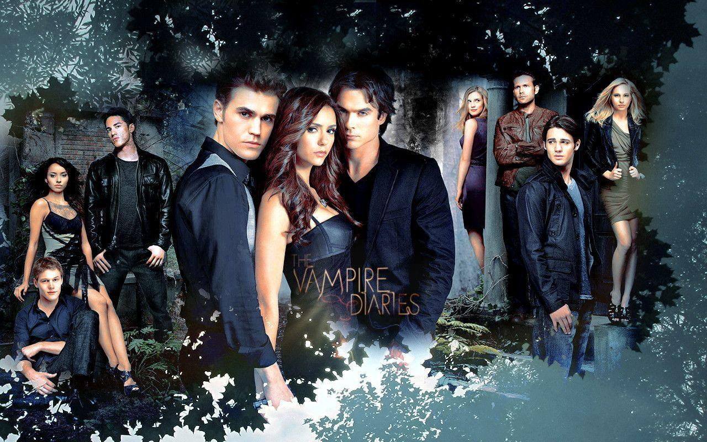
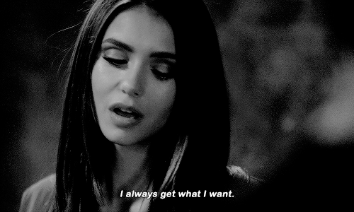
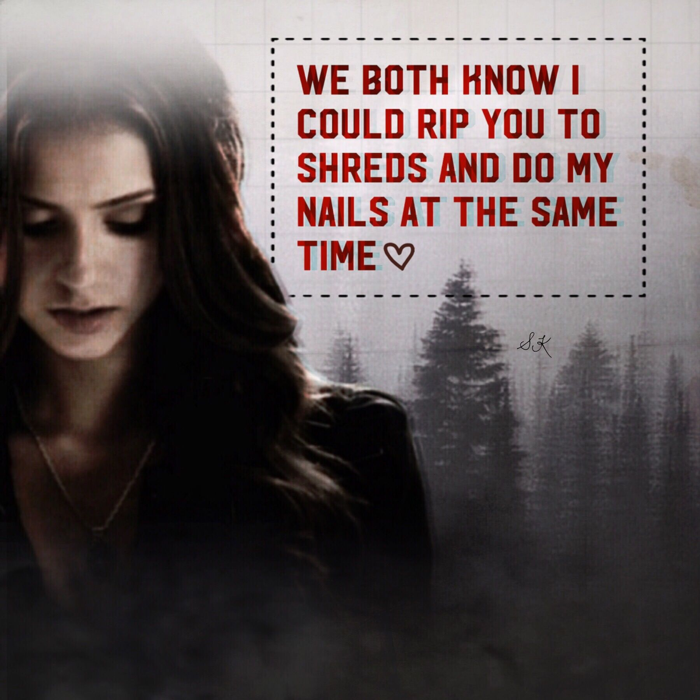
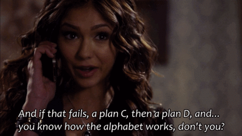
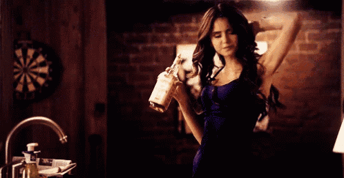
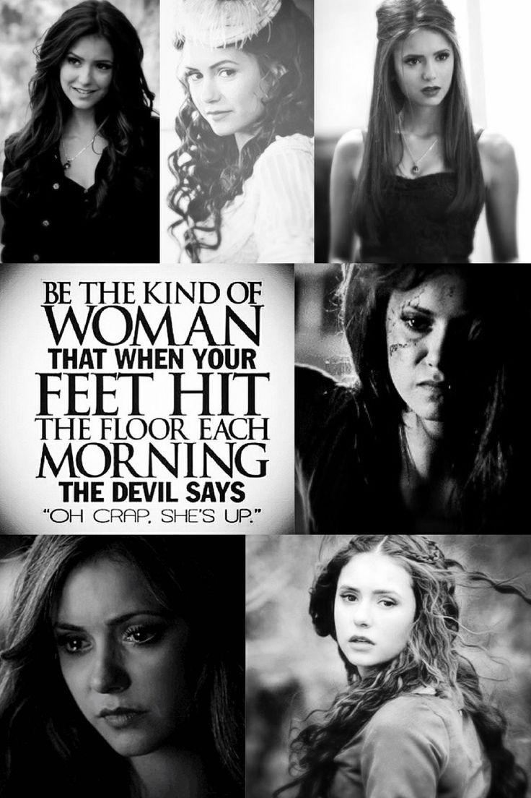
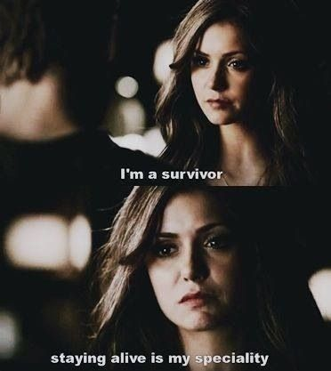

Katherine Pierce, also known as Katherina Petrova, is one of the villanious characters in The Vampire Diaries Universe
.Better known as the TVD universe which consists of:
The Vampire Diaries
which ran from2009 to 2017 for over 8 years
The Cast of The Vampire Diaries

The Originals
which ran from2013 to 2018 for over 5 years
The Cast of The Originals
Legacies
which ran from 2018 to 2022 for over 4 years
The Cast of Legacies
She was just an ordinary naïve 18-year-old girl, who gave birth to a baby
girl but was forced to give her away for adoption. She was then disowned by her family for the shame she brought onto them
and was banished to England. During that time, she also caught the attention of an immortal hybrid named Klaus who had plans
to sacrifice her in a ritual
After learning this, Pierce quickly ran away and turned herself into a vampire, which made her useless for the ritual as
Klaus had intended. As a result, Klaus killed her entire family to get back at her for running away. Since then, Pierce
trusted no one and did horrible things to survive. She did just that for five centuries.
However, beneath that (fabulous) bitchy exterior, Katherine grappled with various vulnerabilities, and even though she
often fought to hide it, was more sentimental than she liked to let on.
Yes, she may be selfish, manipulative, calculative and psychotic.But she does give some really important life lessons to learn.
Here are some of her qualities that we must inculcate into our's:
Sometimes, the only person who will have your back is you.
She never expected help from anyone. If she actually needs somebody's help then she either manipulates them into helping her
or corners them to do what she needs. There's no gray area for her when it comes to anyone who is not HER.
Her Determination
Pierce shows strong determination which explains why she always gets what she wants. She focuses on her goals and works
her way towards them and is relentless until she achieves them. By hook or by crook, she gets her goals accomplished,
and giving up was never an option.

Strategic Thinking Skills

Besides her pretty face, Pierce is a master in the art of manipulation and it takes a lot of effort to be one. It
requires one to be strategic. That includes a lot of planning, thinking, visioning and strategising.
Pierce is always one step ahead of her enemies because she knew who she was dealing with. She knows how they think and
act and with that knowledge, she is able to plan not just for the present but also the future. By that, she is prepared
for any circumstances.
"Wait, you guys! This is Katherine we’re talking about. She is going to see a sneak attack from a mile away"
– Caroline Forbes
Always have a back-up plan

In the scene where Damon Salvatore ruined her master plan by killing off her werewolf, Pierce said to him,
“Do you honestly believe that I don’t have a plan B and if that fails a plan C, then a plan D, and you know how the
alphabets works, don’t you?”
Don’t deny yourself happiness
No matter how hard things get she never forgets to credit herself the happiness and joy of moments in her life.
For example in a scene where she is kidnapped by Klaus after being on the run for 500 years, she finds a booze bottle
and decides to indulge in a little dance as the apartment was empty.

Don’t sweat the small stuff!
She never feels bad for her situation or demand sympathy for anyone. If anything she stands up for herself no matter what
she needs to do or who she must kill. She is such a strong headed and adamant individual that she just convinces you
"She did what she had to do , for her own survival" no matter the collateral damage.

Her Agility and Adaptability
Pierce was a human, vampire, traveler and a doppelganger. She was able to adapt to all the circumstances she was in and
hence, her ability to outsmart Klaus for five centuries. For instance, Pierce had no problem “fitting in” in England
after she was disowned by her family. In fact, she spoke fluent English and acquired the English accent.
Besides that, even after taking the cure for vampirism, Pierce was still capable of caring for herself without much
reliance on others.
As good as she is on her own, she also showed adaptability in terms of working. She was capable of working in a team.
Despite knowing the contempt the Salvatore brothers have for her, she was still able to work together with them at
numerous occasions to get rid of Klaus.
Charles Darwin once said:
“It is not the strongest of the species that survives, nor the most intelligent that survives. It is the one who is the
most adaptable to change.” 
Some of her Famous Quotes over the Seasons of TVD-
“So call it pride or vanity, but after the life that I’ve led, I refuse to drift off into the sunset.”
“I survived childbirth, the death of my entire family, and 500 years of running from an immortal hybrid. You can
understand why I’m a little upset that I’m on the verge of being defeated by a sinus infection!”
“Do you like who I am, or do you miss who I was?”
“Love, hate—such a fine line. I can wait.”
“You hate me, huh? That sounds like the beginning of a love story, Stefan, not the end of one.”
“I want what I want, Stefan. And I don’t care what I have to do to get it. My list of victims is a long one, and I have
no problem adding one more name to that list.”
“I’m Katherine Pierce. I survive.”
“How’s my dress? It screams safe and predictable. Am I right? Or am I right?”
“Cold, manipulative, good hair. You really are my daughter.”
A Note From the Author
You can watch all the episodes of The Vampire Diaries, The Originals and Legacies in Netflix or visit
The GoMovies site to watch all the episodes for free!!
For those of you who have already watched and rewatched it a couple times, here's an audio of the theme song
Happy Nostalgica!!